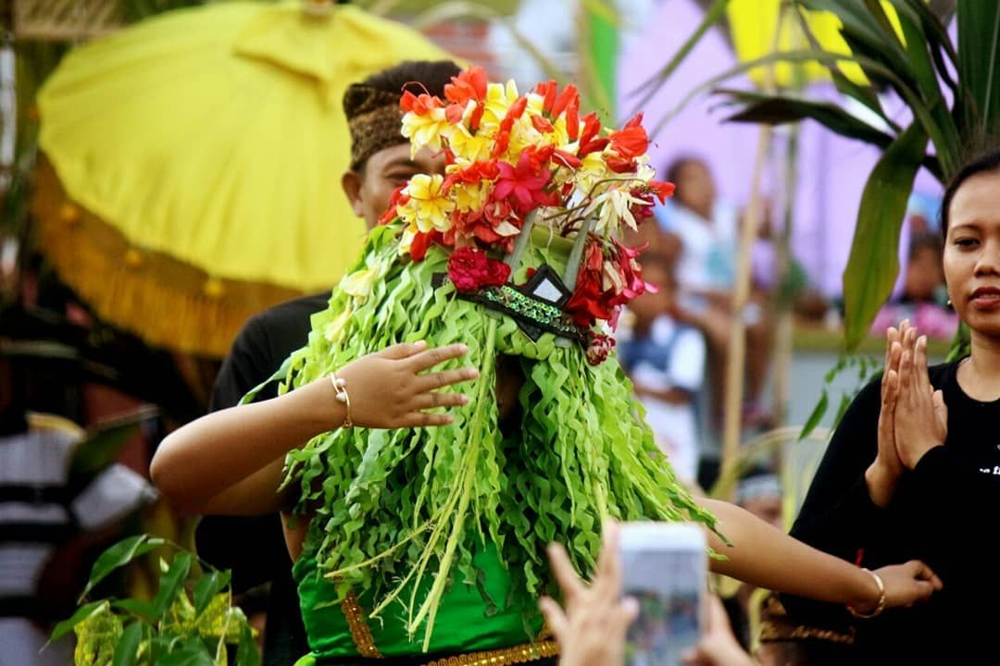
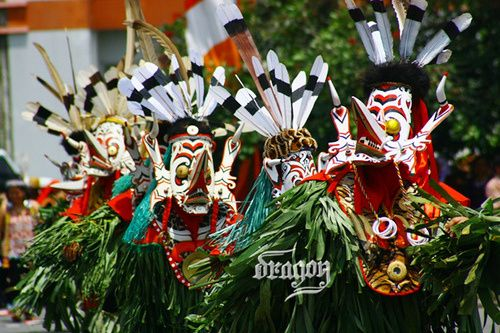

Seblang Olehsari
Banyuwangi, Jawa Timur
Ritual tari sakral suku Osing yang ditarikan oleh penari dalam kondisi tidak sadar untuk bersih desa.
Baca Artikel
Fahombo Nias
Pulau Nias, Sumatera Utara
Tradisi melompati batu setinggi 2 meter sebagai simbol keberanian dan tanda kedewasaan seorang pria.
Baca Artikel
Tari Hudoq
Kepulauan Kalimantan
Tarian ritual suku Dayak menggunakan topeng kayu raksasa untuk memohon kesuburan dan hasil panen melimpah.
Baca Artikel
Karapan Sapi
Pulau Madura, Jawa Timur
Ajang balapan sapi bergengsi yang memadukan kecepatan, ketangkasan, dan harga diri masyarakat Madura.
Baca Artikel
Pasola Sumba
Pulau Sumba, NTT
Upacara perang-perangan berkuda saling melempar lembing kayu ritual untuk menghormati leluhur.
Baca Artikel
Wayang Kulit
Jawa dan Bali
Seni pertunjukan bayangan teater boneka kulit yang kaya akan nilai filosofi kehidupan dan cerita epik.
Baca Artikel